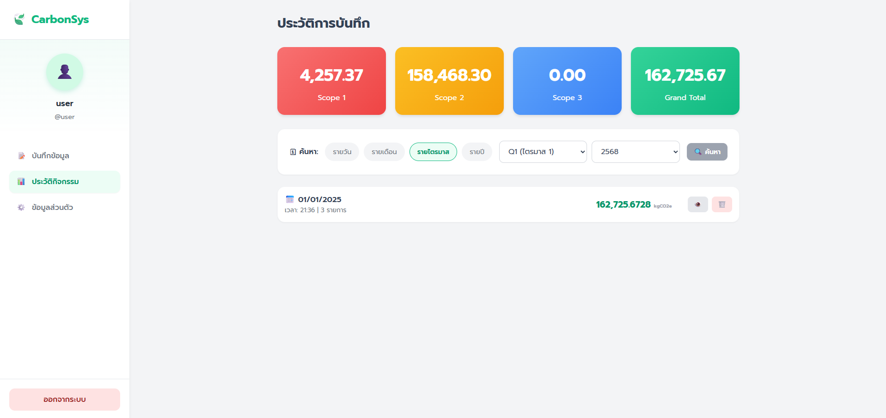

Contact
Education
Rajamangala University of Technology Phra Nakhon
Bachelor's Degree - Information System and Digital Innovation
Panitchayakan Rajdamnern Technological College
High Vocational Certificate - IT Major IoT System Development
Languages & DB
Frameworks & Tools
- Tailwind CSS
- Bootstrap
- Git (GitHub)
- VS Code
- AI Prompting
- Gemini AI
Language Skills
Experience & Projects

Carbon Footprint Management System
University Project (2025 - 2026)
Developed a comprehensive full-stack web application designed to track and manage carbon emission activities. Engineered the backend architecture using PHP & MySQL. Built interactive dashboards with HTML, CSS, and JS to visualize metrics. Leveraged AI tools & prompt engineering to optimize codebase.
View Project
IT Support Staff
Bangkok Metropolitan Administration (Mar 2023 - May 2023)
Provided comprehensive IT support, including the maintenance, troubleshooting, and repair of computer systems and peripheral hardware. Assisted in managing and monitoring network infrastructure to ensure seamless and efficient daily operations.